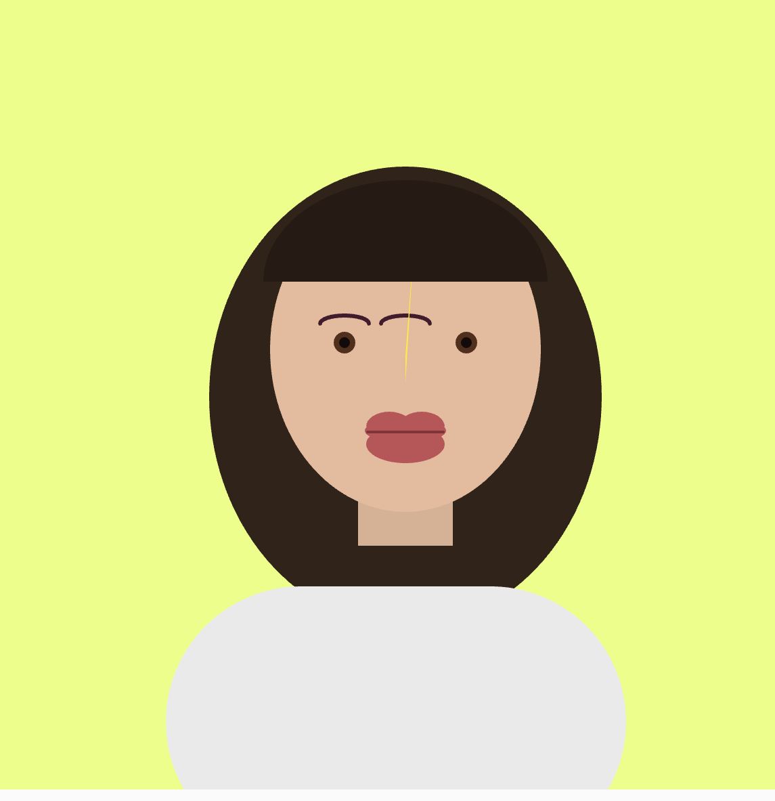

p5.js Self Portrait
Interactive generative self-portrait built with 2D drawing primitives in p5.js.
Portrait Preview

Concept & Process
For this self-portrait, I translated my facial features into coordinate-based geometries using p5.js. By layering 2D primitives including ellipses, arcs, rectangles, and custom fill colors, I created an open-forehead hairstyle, warm brown eyes, and contoured lips directly through code logic.
p5.js Source Code
function setup() {
createCanvas(600, 600);
}
function draw() {
// Background
background(234, 300, 123);
noStroke();
// 1. Back Hair
fill(50, 34, 25);
ellipse(300, 310, 290, 340);
// 2. Neck
fill(220, 175, 145);
rect(265, 330, 70, 90);
// 3. Shirt / Shoulders
fill(234, 234, 234);
rect(123, 450, 340, 200, 140);
// 4. Head / Face
fill(235, 185, 155);
ellipse(300, 275, 200, 240);
// 5. Eyes
// Change the fill here to a rich brown:
fill(85, 45, 25); // Warm brown iris
ellipse(255, 270, 16, 16);
ellipse(345, 270, 16, 16);
// Optional: Add inner black pupils for depth
fill(20, 10, 10);
ellipse(255, 270, 8, 8);
ellipse(345, 270, 8, 8);
// 6. Eyebrows
stroke(60, 25, 45);
strokeWeight(3);
noFill();
arc(300, 256, 36, 20, PI, TWO_PI);
arc(255, 256, 36, 12, PI, TWO_PI);
// 7. Nose & Mouth
noStroke();
fill(300, 234, 25);
triangle(300, 280, 300, 300, 306, 200);
// Big Lips
fill(195, 80, 85);
arc(288, 332, 34, 22, PI, TWO_PI); // Left top peak
arc(312, 332, 34, 22, PI, TWO_PI); // Right top peak
ellipse(300, 335, 60, 18); // Center upper lip
ellipse(300, 345, 58, 28); // Full bottom lip
stroke(140, 45, 50);
strokeWeight(2);
line(272, 336, 328, 336); // Center lip line
noStroke();
// 8. Front Hair
fill(40, 25, 20);
arc(300, 225, 210, 150, PI, TWO_PI);
}